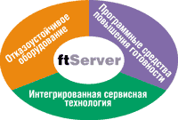
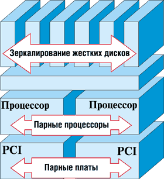
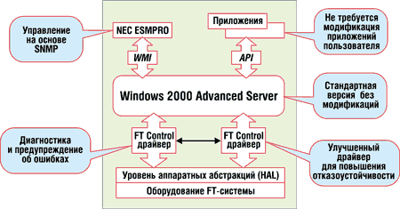
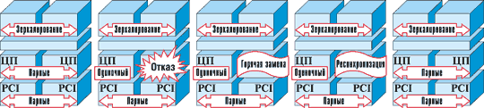
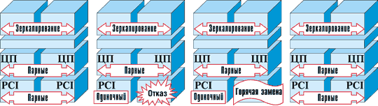
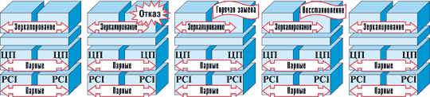

Андрей Борзенко
Информационные системы, долго существовавшие на вторых ролях в качестве средств поддержки, сегодня усовершенствовались настолько, что стали определяющим фактором повышения доходности предприятий во многих отраслях - от финансовых услуг до электронной торговли. Для поддержания финансовой состоятельности и благополучия компаний огромное значение сегодня приобрели средства защиты и повышения готовности данных, приложений и компьютерных услуг. Отметим, что отказоустойчивые системы традиционно ограниченно применялись в бизнесе, поскольку отличались высокой стоимостью и требовали привлечения высококвалифицированного персонала.
Благодаря значительному повышению надежности, достигнутому Microsoft в системе Windows 2000, в настоящее время существенно расширяется использование серверов на основе этой ОС для коммерческих приложений. Сотрудникам ИТ-подразделений, отвечающим за эксплуатационную поддержку технических средств, рынок сегодня предлагает богатый набор средств достижения высокой готовности систем - серверы с высокой избыточностью, кластеры высокой готовности из двух или более систем и т. п. При выборе конкретного решения приходится учитывать приемлемый уровень готовности и начальную стоимость системы, затраты времени и усилий на реализацию решения и его эксплуатационную поддержку.
Очень часто определяющим становится требование высокого уровня готовности компьютерных систем, которые должны сохранять работоспособность круглосуточно (режим 24x7). В одном из исследований Gartner Group и Dataquest было показано, что по меньшей мере 37% рассмотренных систем характеризуются незапланированным временем простоя от 1 ч и более в месяц. Другое исследование, проведенное компанией Standish Group, выявило, что 72% ответственных приложений простаивают 9 ч или более в году. Средняя стоимость минуты простоя ответственных приложений составила при этом около 10 тыс. долл. Более того, примерно 6% приложений могли бы привести к потерям 100 тыс. долл. за минуту простоя во время пиковой нагрузки, а средние приложения электронной торговли могли бы в случае отказа компьютерных систем вызвать потери на сумму более миллиона долларов. Из отчета, опубликованного фирмой Zona Research, можно заключить, что из-за неприемлемо низкой скорости обмена данными с Web-сайтами предприятия электронной торговли в США ежегодно недополучают до 4,35 млрд долл. выручки. Еще один показатель растущего размера потерь из-за простоев - случай онлайнового аукциона, стоимость основного фонда которого уменьшилась на миллионы долларов из-за неисправности компьютерной системы в течение 22 ч.
Доступность сети Интернет и связанное с ней развитие электронной торговли по схеме B2B (business-to-business) и B2C (business-to-consumer) предъявляют все более жесткие требования к готовности информационных систем, обеспечивающих ИТ-инфраструктуру. IDC прогнозирует, что к 2003 г. в онлайновой торговле примет участие более 500 млн пользователей Интернета, а объем сделок приблизится к 1,3 трлн долл. Отсюда IDC делает вывод, что мировой рынок систем высокой готовности будет постоянно расти.
Учитывая эти требования, корпорация Stratus Technologies (http://www.stratus.com) создала серию серверов ftServer. Для достижения высочайших уровней готовности приложений, работающих в среде Windows 2000, в данной линейке серверов объединены отказоустойчивые компоненты, программные средства повышения готовности и интегрированная сервисная технология (рис. 1). Поскольку системы ftServer обеспечивают полную совместимость с ОС Windows 2000 Server на уровне прикладного двоичного интерфейса (Application Binary Interface, ABI), пользователи множества стандартных приложений для среды Windows 2000 могут воспользоваться преимуществами отказоустойчивой серверной платформы, и при этом не потребуется вносить никаких модификаций в ПО или использовать какие-либо специальные процедуры администрирования.
|  | Рис. 1. Основа дизайна ftServer.
|
Разработчики систем ftServer также бросили вызов сложившемуся мнению, что начальная стоимость отказоустойчивых систем гораздо выше, чем у кластеров высокой готовности. Использование стандартных программных компонентов и всего одного комплекта лицензий на один сервер, по мнению разработчиков, делает ftServer по цене сопоставимым с кластером из двух узлов. Более того, начальная цена системы ftServer оказывается намного меньше, чем альтернативная реализация на основе четырех серверов.
За отказоустойчивость, заложенную в конструкции систем ftServer, не приходится расплачиваться ухудшением показателей эффективности и быстродействия. Всесторонне продуманная архитектура сервера Stratus ftServer естественным образом повышает и готовность среды Windows 2000.
Аппаратная отказоустойчивость
Дублирование отказоустойчивого оборудования (рис. 2) фактически устраняет возможность сбоя в какой-либо точке системы и защищает целостность данных. Сдвоенные процессоры и модули памяти работают параллельно, в жесткой связи, синхронно выполняя одни и те же инструкции в одно и то же время, не снижая производительность системы. При отказе какого-либо компонента обработка данных не прерывается, не происходит потерь данных или снижения производительности. Пользователь может заменить неисправный компонент без отключения питания сервера. Предусмотрена горячая замена не только модулей памяти и процессоров, но и других дублированных основных компонентов, таких как жесткие диски, платы PCI, вентиляторы и блоки питания.
|  | Рис. 2. Дублирование основных подсистем.
|
Программная готовность
В серверах серии ftServer надежность ОС Windows 2000 повышается с помощью различных программ, нацеленных на традиционные источники отказов (рис. 3). В числе этих средств более надежные драйверы устройств, модули защиты памяти и системного мониторинга. Эти возможности реализуются в системах Stratus без вмешательства в ядро ОС или базовых приложений.
|  |
| Рис. 3. Механизмы программной отказоустойчивости.
|
Интегрированная сервисная технология
Каждая система ftServer постоянно контролирует свою работу. При обнаружении исключительной ситуации система автоматически передает отчет в центр поддержки пользователей (например, Stratus Customer Assistance Center). Далее сотрудники центра или авторизованные поставщики программных решений могут дистанционно при помощи глобальной сервисной сети фирмы Stratus изучить сложившуюся ситуацию и принять нужные меры без задержек, связанных с выездом к заказчику. Такая модель приоритетного профилактического обслуживания просто нереализуема в случае обычных методов поддержания высокой готовности.
Для обеспечения требований высокой готовности пользователи Windows 2000 могут выбрать одно из трех решений: автономные серверы, кластеры на основе серверов высокой готовности и средства повышения отказоустойчивости (fault-tolerant toolkit), применяемые для обычных серверов. В таблице приводятся сильные и слабые стороны каждого из этих решений, а также риски, присущие этим более ограниченным подходам к проблеме обеспечения высокой готовности сервера на основе ОС Windows 2000.
Альтернативные средства достижения высокой готовности сервера для Windows 2000
| Решение | За | Против |
| Автономные серверы | Привлекательные цены. Простота развертывания |
Ограниченные возможности защиты против катастрофических отказов оборудования. Отсутствие защиты от сбоев ПО |
| Кластеры высокой готовности | Устранение возможности сбоя из-за отказа отдельных компонентов оборудования. Планирование простоев |
Сложная реализация. Сложное администрирование. Приложения должны поддерживать кластеризацию. Требуется определенное время на восстановление работоспособности |
| Средства повышения отказоустойчивости (для обычных серверов) | Очень высокая степень готовности. Отсутствие задержки на восстановление системы после сбоя. Не требуется модификации приложений. Проверенная концепция |
Высокая начальная цена. Только для 2-процессорных конфигураций. Снижение производительности почти на 10% |
| Системы с аппаратно реализованной отказоустойчивостью (серверы семейства Stratus ftServer) | Отсутствие задержки на восстановление системы после отказа компонентов.
Отказ компонентов не влияет на обработку транзакций в памяти. Работает как единая система; не требует специального администрирования или оперативной поддержки. Модель поддержания работоспособности и обслуживания идеальна для работы без обслуживающего персонала. Цена эквивалентна цене кластера |
Для обновления ПО требуется плановый простой системы |
Стоит отметить, что именно создание кластеров было первым подходом к снижению времени простоев, типичного для серверов ответственных деловых приложений.
Аппаратная избыточность
Разработчики из Stratus полагают, что у кластеров высокой готовности и систем ftServer есть одна общая характеристика - оба решения используют избыточность аппаратных средств, однако на этом их сходство и заканчивается. Системы Stratus ftServer поставляются в двух конфигурациях: с двойной (Dual Modular Redundant, DMR) и тройной избыточностью (Triple Modular Redundant, TMR). В DMR-моделях используются два жестко связанных модуля процессор-память, а модели TMR содержат по три таких подсистемы. В обеих моделях резервированные системные платы выполняют все инструкции в жестком режиме синхронизации (lockstep). Если специализированная цепь какой-либо системной платы обнаруживает ошибку, эта системная плата немедленно изолируется от системы и исключается из работы. На втором уровне обнаружения ошибок происходит сравнение выходной информации каждой подсистемы процессор-память для каждой операции ввода-вывода.
В DMR-системе при возникновении ошибки сравнения, не сопровождаемой сигналом неисправности с системных плат (нештатное событие), для вывода неисправной системной платы из работы используются программные алгоритмы, основанные на слежении за историей событий. В TMR-системе для идентификации и изолирования неисправностей применяется логика голосования ("третий лишний"). В любом случае процесс обработки не прерывается, производительность системы не снижается, а вычисления продолжаются на оставшихся системных платах. Весь цикл обнаружения ошибок и изолирования неисправности занимает несколько миллисекунд и не прерывает функционирование системы.
В случае же кластерной системы процесс переключения приложения инициируется только после того, как вышедший из строя узел перестает передавать специальные сигналы "пульса" (heartbeat). До того как работоспособный узел начнет процедуру переключения, могут пройти целые секунды драгоценного времени, что даже в самых благоприятных условиях оборачивается простоями. После инициирования процесса восстановления формируется новый кластер, восстанавливается база данных и перезапускается приложение. Эта последовательность восстановления работоспособности может растянуться на многие минуты в зависимости от сложности среды выполнения приложения и конфигурации кластера. В свою очередь, отсутствие сигналов "пульса" от узла не всегда служит надежным свидетельством неисправности, поскольку может быть связано со снижением производительности из-за большой нагрузки. В таких ситуациях могут инициироваться ложные процессы восстановления.
В серверах Stratus ftServer защищенность резервированного аппаратного обеспечения в пределах всей архитектуры системы повышается благодаря тому, что этот механизм полностью прозрачен для ОС Windows 2000, промежуточного ПО и приложений. В перечень резервируемых компонентов входят такие дублированные устройства, допускающие горячую замену, как подсистемы процессор-память, платы ввода-вывода, PCI-адаптеры, дисковые накопители, блоки питания и вентиляторы. Для обеспечения высокой готовности не нужно полагаться на работу процедур, управляющих конфигурацией оборудования, поскольку в случае возникновения отказа резервированные компоненты просто продолжают функционировать.
Высокая готовность ПО
В качестве сильной стороны кластеров высокой готовности в сравнении с традиционными отказоустойчивыми системами часто упоминается их способность поддержания высочайшей степени готовности ПО. При этом подчеркивается, что в кластерах обработка программных сбоев сходна с обработкой аппаратных неисправностей - если приложение не отвечает, то кластер переключается на резервный узел и восстанавливает работу за меньшее время, чем это делает отказоустойчивый сервер при отработке процедуры повторного запуска приложения.
В серверах семейства ftServer имеются не только уникальные средства, ускоряющие восстановление системы после сбоя ПО, но и механизмы, которые помогают предотвратить сами причины возникновения отказов, связанных с ПО.
Более надежные драйверы устройств
Драйверы в ftServer минимизируют незапланированные нарушения работоспособности и обеспечивают повышение целостности данных с среде ОС Windows 2000. В частности, эти драйверы способны обнаруживать и предотвращать запись данных платой адаптера за пределами выделенного диапазона физической памяти. Кроме того, они следят за показателем MTBF (средняя наработка на отказ) плат PCI и отключают их при превышении заданного порога, а также обеспечивают поддержку визуальной индикации состояния устройства. Среди других функций - поддержка горячей замены компонентов, объединение плат для обеспечения высокой готовности, онлайновая диагностика.
Менеджер реестра ресурсов RIM
Модуль RIM (Resource Inventory Manager) позволяет динамично отслеживать версии аппаратного и программного обеспечения, помогая предотвращать конфликты. При помощи этого модуля создается отчет о конфигурации оригинальной системы после ее установки, а затем регистрируются любые изменения конфигурации. Отчеты хранятся в локальной системе и, кроме того, пересылаются в центр поддержки пользователей компании Stratus (Customer Assistance Center), где они сохраняются в централизованной базе данных. Это позволяет быстро идентифицировать и разрешить известные конфликты версий. При возникновении у пользователя проблемы с ПО сотрудники Stratus всегда могут получить доступ к информации о версиях, и эта информация используется для имитации проблемы, ее диагностики и устранения.
Менеджер готовности ПО
В дополнение к средствам мониторинга, имеющимся в ОС Microsoft Windows 2000, сервер ftServer оснащается менеджером готовности ПО (ftServer Software Availability Manager). Этот модуль также отслеживает активность процессора, памяти и дисков, сравнивая их с пороговыми значениями, задаваемыми системным администратором. Кроме того, заказчики могут воспользоваться расширенными средствами мониторинга программного и аппаратного обеспечения, реализованными в таких ведущих продуктах, как PATROL производства BMC Software; Tivoli от IBM, Unicenter производства Computer Associates и AppManager компании NetIQ.
Виртуальный диск
Функция ftMemory RAM Disk позволяет сохранить состояние выделенного участка памяти сервера и восстановить его после перезагрузки. Для приложений, работа которых зависит от состояния данных в течение сеанса, такой виртуальный диск - особенно привлекательная возможность надежного и быстрого (со скоростью оперативной памяти) сохранения информации. А вот в кластерных системах содержимое памяти при инициации процесса восстановления всегда утрачивается, а сохраняются только данные, записанные на диск.
Online dump
Эта функция позволяет после сбоя ОС быстро перезагрузить сервер без утраты информации, необходимой для анализа причин отказа.
Начальная цена
В свое время отказоустойчивые системы предлагались по завышенным ценам и оказывались слишком дорогими в сравнении с начальной стоимостью альтернативных решений обеспечения высокой готовности. Цена системы семейства ftServer, по замыслу разработчиков, должна быть на уровне эквивалентно сконфигурированного кластера высокой готовности из двух узлов. Фирма Stratus достигает такого ценового паритета двумя путями. Во-первых, все основные компоненты систем ftServer - это стандартные изделия широкого потребления. В системах ftServer устанавливаются процессоры, память, диски и блоки питания, идентичные тем, что используются в традиционных серверах ведущих производителей, а вклад фирмы Stratus состоит в улучшении показателей готовности создаваемого на их основе сервера. Во-вторых, сказывается продуманная политика лицензирования ПО. При формировании кластера пользователь должен приобретать не только дуплицированные аппаратные компоненты, но и по нескольку копий ОС, промежуточного ПО и приложений. Реальная стоимость приобретения нескольких копий ПО зависит от политики конкретного продавца в отношении продажи лицензий. В случае же систем ftServer требуется приобрести только одну лицензию на ОС, промежуточное ПО и приложения.
Совокупная стоимость владения
Совокупная стоимость владения (ÒÑÎ) системой высокой готовности определяется не только первоначальной ценой и эксплуатационными затратами, но также размером сэкономленных при развертывании средств. Руководители ИТ-подразделений, сравнивая те или иные решения, должны принимать во внимание ряд факторов.
Издержки от простоев
Как уже отмечалось ранее, часовой простой может привести к издержкам, исчисляемым сотнями тысяч долларов. Например, в сфере финансовых услуг приложения, связанные с брокерскими операциями или онлайновой авторизацией кредитных карт, могут при простое компьютерных систем вывести из обращения потоки на миллионы долларов в час. Серверы семейства Stratus ftServer строятся так, чтобы обеспечивать время бесперебойной работы 99,999%, что в среднем за год дает не больше пяти минут незапланированного простоя. В то же время поставщики кластеров высокой готовности иногда предлагают решения, обеспечивающие уровень готовности всего 99,9%, что эквивалентно 8,7 ч простоя за год.
Снижение зависимости от персонала
Решения на основе кластеров высокой готовности весьма чувствительны к качеству первоначального планирования и последующей эксплуатации, т. е. слишком зависимы от программистского и административного опыта сотрудников ИТ-подразделения. Затраты на персонал могут легко превзойти стоимость самого оборудования. При этом зарплата сотрудников - в отличие от стоимости оборудования - это постоянная расходная статья, которая учитывается в финансовых показателях каждый год.
Более быстрая готовность к выходу на рынок
Руководство должно учесть затраты, связанные со временем, которое технический персонал тратит на планирование, программирование и тестирование функциональности кластера высокой готовности до его развертывания. Поскольку архитектура серверов ftServer не связана такими зависимостями, заказчики могут развернуть приносящие доход приложения гораздо быстрее.
Прозрачность для приложений
К настоящему времени создано множество приложений для кластеров на основе технологий Microsoft, учитывающих специфику кластерной конфигурации. Сюда входят некоторые популярные приложения управления базами данных, обмена сообщениями и системы планирования ресурсов предприятия. Кроме того, технология построения кластеров также предоставляет программные интерфейсы и инструментарий для разработки ориентированных на кластеры приложений.
И хотя приложения, не поддерживающие кластерный интерфейс прикладного программирования (Сluster API), могут использоваться в кластерной конфигурации и зачастую могут даже конфигурироваться для режима восстановления работы после сбоя, такие приложения не обладают преимуществами масштабирования и эффективности восстановления, которые свойственны программам, специально разработанным для кластерных решений.
В свою очередь, решения на основе серверов семейства Stratus ftServer позволяют запускать стандартные приложения для ОС Windows 2000 без внесения каких бы то ни было изменений. И поскольку высокая готовность достигается на уровне платформы, приложениям мгновенно и автоматически становятся доступны все преимущества отказоустойчивой среды сервера ftServer.
Серверы NEC Express5800/ft
В июне 2000 г. фирма Stratus Technologies (тогда еще Stratus Computer) приступила к лицензированию своей технологии отказоустойчивых серверов. Компания даже изменила собственное название, чтобы оно лучше отражало ее новую стратегию. Stratus создала специальное подразделение по лицензированию своей интеллектуальной собственности. Первое соглашение было подписано с корпорацией NEC (http://www.nec.com).
Серверы серии NEC Express5800/ft (http://www.necft.com) разрабатывались как системы с истинной отказоустойчивостью, использующие стандартные аппаратно-программные компоненты и обеспечивающие высокий уровень готовности. Использование жестко синхронизированных избыточных модулей подсистем и средств управления на основе протокола SNMP позволяет избежать сложностей администрирования и технического обслуживания, обычно ассоциируемых с кластерными системами. Эти серверы также позволяют избежать расходов, связанных с необходимостью приобретения нескольких копий ПО, требуемых для кластеров в конфигурации "активный-активный".
В NEC Express5800/ft применяется удвоенное число таких компонентов, как подсистемы процессор-память, PCI-платы ввода-вывода и блоки питания. Среди PCI-модулей имеются избыточные SCSI-карты и сетевые контроллеры для обеспечения непрерывного доступа к сохраненным на дисках данным и сетевым ресурсам. Контроллер SCSI соединяет зеркалированные подсистемы внутренних накопителей с возможностью горячей замены. Система строится на основе заменяемых пользователем модулей (Customer Replaceable Units, CRU), представляющих собой подсистемы, которые могут самостоятельно конфигурироваться, диагностироваться и при необходимости заменяться без отключения питания.
В NEC Express5800/ft реализован новый подход к уменьшению времени простоя, что позволило разработчикам говорить о системах для ответственных бизнес-приложений с так называемой истинной упрощенной готовностью (Simplified Availability). Каждый набор избыточных модулей работает в дуплексном режиме, с непрерывным сравнением и синхронизацией всех действий. Если состояние двух модулей оказывается неодинаковым, неисправный модуль определяется и немедленно исключается из работы. Оставшийся модуль продолжает работать в симплексном режиме без нарушения работы системы, целостности данных или действий пользователя. Неисправный модуль можно проверить диагностическими утилитами и заменить без нарушения работы системы. После замены неисправного модуля система снова начинает работать в дуплексном отказоустойчивом режиме.
В серверах используется ОС Microsoft Windows 2000 Advanced Server, обладающая расширенными возможностями повышения надежности. В Windows 2000 благодаря уровню абстракции аппаратного обеспечения (Hardware Abstraction Layer, HAL) обеспечивается поддержка различных аппаратных платформ, не требующая внесения изменений в ядро ОС. Серверы NEC Express5800/ft расширяют этот уровень абстрагирования за счет расширений HAL, полностью прозрачных для системы. В результате отказоустойчивый модуль не нуждается в специализированном и дорогостоящем прикладном ПО, ориентированном на работу в кластерах.
Одна из типичных причин отказов ОС - попытка драйверов устройств получить доступ к памяти, не предназначенной для использования ими. Драйверы устройств взаимодействуют с ядром ОС, и, если в них есть ошибки, это чревато проблемами в работе системы прерываний. Системы серии NEC Express5800/ft поставляются с более надежными драйверами для каждого типа устройств, используемых в системе, а также для выбранного набора адаптеров для шины PCI. Более надежные драйверы устройств обнаруживают и предотвращают операции записи за пределами выделенной им физической памяти, содержат дополнительные инструментальные и диагностические средства для мониторинга и процедур технического обслуживания, а также обеспечивают поддержку дуплексных операций и горячей замены. Каждый из этих драйверов имеет сертификат соответствия и цифровую подпись подлинности в соответствии с требованиями Microsoft. Для обеспечения высокой отказоустойчивости следует оснащать системы NEC Express5800/ft только такими драйверами и соответствующими контроллерами.
Чтобы эффективно отрабатывать плановые и внеплановые простои, в поставку систем семейства NEC Express5800/ft включен пакет ESMPRO. В задачу этого программного средства входят поддержка управления ресурсами и мониторинг отказоустойчивых компонентов системы. Пакет ESMPRO состоит из стандартного серверного агента на основе протокола SNMP и сетевого менеджера приложений, который позволяет выполнять дистанционное администрирование и техническое обслуживание. ESMPRO дает возможность администратору отображать в графической форме системную конфигурацию, просматривать рабочие параметры и пороги наработки компонентов, а также переводить модули в автономный режим для диагностирования, замены и модернизации. Примечательно, что линейку серверов Express 5800 у NEC, в свою очередь, лицензировала группа Bull.
Методология непрерывной работоспособности
Применение кластерных систем обеспечивает высокую готовность, но неисправность в узле кластера обычно приводит к прерыванию работы пользователя с необходимостью повторного входа в систему и возможной потерей данных и транзакций. Отказоустойчивая технология, используемая в серверах семейства NEC Express5800/ft, предназначена для защиты пользователей от прерывания рабочего сеанса, потери данных или транзакций.
Ниже на примерах показаны типичные ситуации отказов компонентов и реакция системы NEC Express5800/ft на аппаратные сбои.
Отказ процессора или памяти
Для работы в дуплексном режиме отказоустойчивый набор микросхем, используемый в системах NEC Express5800/ft, обеспечивает синхронизацию состояния резервированных процессоров и подсистемы памяти с точностью до одного цикла процессора. При возникновении неисправности в процессоре или памяти отказавший модуль немедленно отключается, а оставшийся продолжает работу в симплексном режиме (рис. 4). После этого можно выполнить диагностику отказавшего модуля или заменить его в горячем режиме. После замены устройства содержимое памяти работающего модуля автоматически копируется в новый модуль. По завершении копирования содержимого памяти и успешного сравнения система автоматически возвращается к работе в полноценном отказоустойчивом дуплексном режиме.
|  |
| Рис. 4. Отказ и восстановление процессора.
|
Отказ адаптера PCI
Набор микросхем, используемый в системах семейства NEC Express5800/ft, непрерывно сравнивает работу плат PCI, установленных в резервированных PCI-модулях. Если в адаптере возникает неисправность, отказавший адаптер немедленно отключается, а остающийся адаптер продолжает работу в симплексном режиме (рис. 5). Далее можно провести диагностирование адаптера и заменить его в горячем режиме. После замены модуля все адаптеры синхронизируются с рабочим модулем, и система автоматически возвращается в полноценный отказоустойчивый дуплексный режим.
|  |
| Рис. 5. Отказ и восстановление адаптера.
|
Отказ жесткого диска или контроллера
Контроллеры SCSI, применяемые в дисковой подсистеме и поддерживающие горячую замену дисков, интегрированы в избыточные PCI-модули. Могут быть установлены и дополнительные адаптеры для работы с внешними подсистемами хранения данных. Ошибки в контроллерах как внешних, так и внутренних дисковых подсистем обрабатываются так же, как описано в предыдущем примере с адаптерами PCI. Для создания избыточных разделов из нескольких жестких дисков используется программное зеркалирование. Если происходит отказ жесткого диска, неисправный диск исключается из работы, а данные остаются доступными на "зеркале" (рис. 6). Неисправный диск можно продиагностировать и заменить в горячем режиме. После замены информация на диске автоматически восстанавливается на основе содержимого "зеркала". После завершения восстановления оба диска переходят в отказоустойчивый режим зеркалирования.
|  |
| Рис. 6. Отказ и восстановление накопителя.
|
Отказ и восстановление работоспособности сетевого контроллера
Сетевые контроллеры локальных сетей интегрированы в избыточные PCI-модули, а их MAC-адреса согласованы для представления единого виртуального сетевого соединения. Для подключения к другим сетям или для повышения степени избыточности могут устанавливаться дополнительные контроллеры. Неисправности интегрированных или дополнительных контроллеров обрабатываются так же, как и у обычных адаптеров PCI. Если в одном адаптере возникает ошибка, он немедленно отключается, а оставшийся адаптер поддерживает виртуальное сетевое соединение. Адаптер можно продиагностировать и заменить в горячем режиме. После замены одного модуля все адаптеры синхронизируются с работающим модулем и система автоматически возвращается в полноценный отказоустойчивый дуплексный режим.
Сбой и восстановление питания
Питание всех компонентов системы осуществляется от избыточных блоков. Все блоки подключаются к сети переменного тока по независимым сетевым кабелям. При возникновении отказа в блоке питания или неисправности сетевого кабеля другой блок питания продолжает поддерживать работу системы. Неисправный блок питания можно заменить в горячем режиме для восстановления избыточности модуля. После замены модуля система автоматически возвращается к работе в дуплексном отказоустойчивом режиме.
В заключение отметим, что организациям, работающим в ответственных секторах бизнеса и полагающимся на приложения для ОС Windows 2000, следует тщательно оценивать уровень готовности, который может обеспечить выбираемая ими серверная платформа, а также присущие этой системе компромиссы.